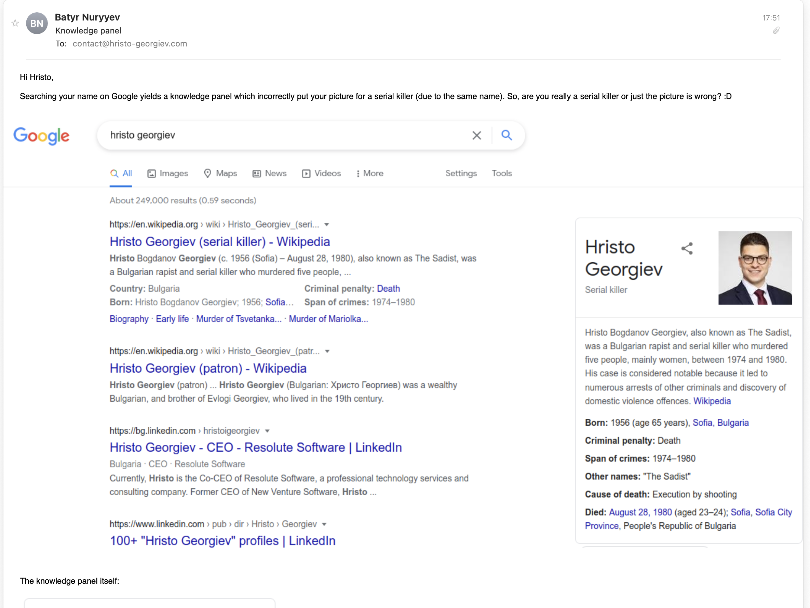
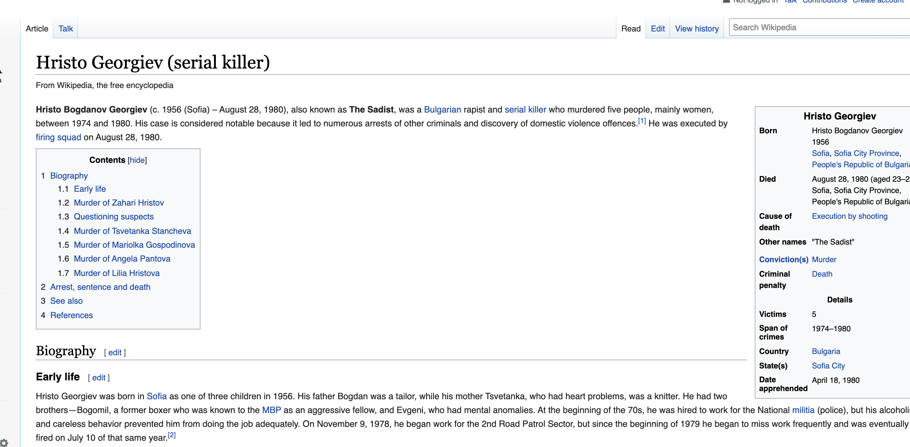

Google turned me into a serial killer
As I was scrolling through my inbox today, I stumbled upon an e-mail from a former colleague of mine who wanted to inform me that a Google search of my name yields a picture of me linked to a Wikipedia article about a serial killer who happens to have the same name as mine.
I quickly popped out my browser, opened Google and typed in my name. And indeed, my photo appeared over a description of a Bulgarian serial killer.

My first reaction was that somebody was trying to pull off some sort of an elaborate prank on me, but after opening the Wikipedia article itself, it turned out that there's no photo of me there whatsoever.
It turns out that Google's knowledge graph algorithm somehow falsely associated my photo with the Wikipedia article about the serial killer. Which is also surprisingly strange because my name isn't special or unique at all; there are literally hundreds of other people with my name, and despite of all that, my personal photo ended up being associated with a serial killer. I can't really explain to myself how this happened, but it's weird. In any case, I am now in the process of reporting this Knowledge Graph bug to Google.
Implications
After sharing the news with some friends and getting a good laugh out of the whole situation, a short rumination on what had happened made me consider how this could have gone down a much darker path. Sure, after taking the time to read the Wikipedia article, one can easily figure out that I'm not a serial killer though one can never be so sure. However, the fact that an algorithm that's used by billions of people can so easily bend information in such ways is truly terrifying.
The rampant spread of fake news and cancel culture has made literally everyone who's not anonymous vulnerable. Whoever has presence on the internet today has to look after their "online representation". A small mistake in the system can lead to anything from a minor inconvenience to a disaster that can decimate careers and reputations of people in the matter of days. Until today, I always had the mindset that such things "happen to other people, but it will likely never happen to me". I was certainly wrong about that.
Maybe letting a single internet company "organize the world's information" probably isn't such a great idea. Some food for thought.
Update
The issue now appears to be fixed. Props to the HackerNews community for bringing this up and greatly accelerating the process!
Here's how the Google search results page looked like at the time of writing this blog post.
I may be in a position to seek compensation from Google, but since I'm not in the US (and have no legal representation in the US) and I don't have contacts to lawyers who are able and willing to work on something like this, I think it's probably more reasonable to focus on more productive things.